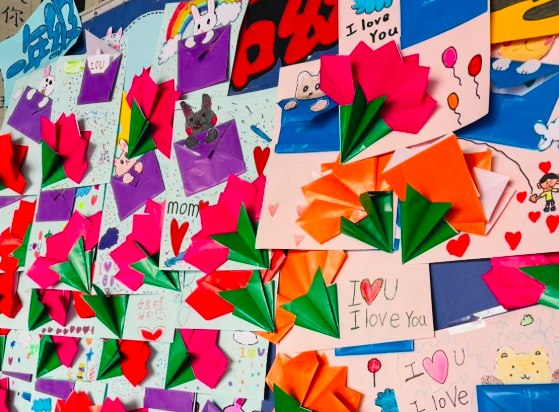

In this May full of gratitude and warmth, 'flowers of the heart' have quietly blossomed in the breezeway of Hsinmin Elementary. To welcome Mother's Day, children across the school — under the careful guidance of three art teachers, Hsiao Wen-yu, Chen Chiu-yan and Huang Yi-tzu — turned the thanks they usually find hard to say into one-of-a-kind pop-up cards.
Every stroke is a blessing; every fold and cut is a heartfelt wish; and each card holds the most sincere love. Stepping into the exhibition feels like walking into a little forest full of love and creativity. The children paused to admire one another's work, delighted by their classmates' ingenuity, and through this mutual appreciation discovered different senses of beauty and ways of expression.
This was more than a display of work; it was a lesson in love, gratitude and appreciation. Special thanks to the three art teachers, who used art to help the children slowly nurture their feelings and carefully complete each piece. Behind every card stands a teacher's patient guidance — making this gift for mum all the warmer and more precious.

Dear mum: thank you for being the warmest harbour in your child's life. This warmth at their fingertips is a child's most innocent declaration of love.
🌷【把愛做成一朵花｜新民國小母親節立體卡片展】🌷
在這個充滿感恩與溫馨的五月
新民國小的穿堂裡
悄悄綻放了一朵朵屬於孩子們的「心花」💐
為了迎接母親節
全校孩子在蕭彣伃老師、陳秋燕老師與黃奕慈老師三位美勞老師的細心指導下
將平常說不出口的感謝
化作一張張獨一無二的立體卡片✨
🖍️ 一筆一劃，是祝福
✂️ 一摺一剪，是心意
💌 一張卡片，藏著最真誠的愛
走進展示區，
彷彿走進一座充滿愛與創意的小森林🌳
孩子們駐足欣賞彼此的作品
驚喜於同學的巧思
也在互相觀摩中
看見不同的美感與表達方式👀✨
這不只是一次作品展示
更是一場關於「愛、感謝與欣賞」的學習❤️
🌟 特別感謝三位美勞老師
用藝術陪伴孩子慢慢醞釀情感
細細完成每一份作品
每一張卡片背後
都有老師耐心引導的身影
也讓這份送給媽媽的禮物
更加溫暖、更加珍貴🥰
謝謝您成為孩子生命中最溫暖的港灣⚓❤️
這份指尖上的溫度
是孩子最純真的告白🌷